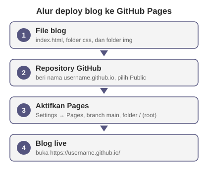

Cara Deploy Blog Statis ke GitHub Pages
Home > Tutorial > Cara Deploy Blog Statis ke GitHub Pages
Arsip
Blog statis adalah blog yang isinya hanya file HTML, CSS, dan gambar — tanpa database dan tanpa bahasa pemrograman server. Blog ini sendiri contohnya: seluruh isinya hanya file HTML dan CSS, tapi bisa dibuka siapa saja lewat internet. Cara hosting-nya gratis, pakai GitHub Pages.

Gambar 1: Alur deploy blog statis ke GitHub Pages — dari file blog sampai blog live.
Yang Dibutuhkan
- Akun GitHub (gratis, daftar di github.com).
- File blog kamu — minimal index.html.
- Browser.
Langkah 1: Buat Repository
Login ke GitHub, klik tombol + di kanan atas, lalu pilih New repository. Isi Repository name dengan username.github.io — ganti username dengan username GitHub kamu. Pilih Public, lalu klik Create repository.
username.github.io
Tips: Kalau mau membuat blog kedua, nama repository-nya bebas, misalnya blog-saya. Alamatnya nanti menjadi username.github.io/blog-saya.
Langkah 2: Upload File Blog
Di halaman repository, klik Add file lalu Upload files. Seret file index.html, folder css, dan folder img ke sana, lalu klik Commit changes. File index.html wajib ada — itu halaman utama blog kamu.

Gambar 2: Contoh isi repository blog — file index.html wajib ada.
Kalau kamu sudah terbiasa dengan Git, bisa push lewat terminal:
git init
git add .
git commit -m "Blog pertama"
git remote add origin https://github.com/username/username.github.io.git
git push -u origin main
git add .
git commit -m "Blog pertama"
git remote add origin https://github.com/username/username.github.io.git
git push -u origin main
Perhatian: Jangan upload file rahasia seperti password atau API key ke repository public — semua orang bisa melihat isinya.
Langkah 3: Aktifkan GitHub Pages
Masuk ke tab Settings di repository kamu, lalu pilih Pages di menu kiri. Pada bagian Branch, pilih main dan folder / (root), lalu klik Save.
Langkah 4: Buka Blog Kamu
Tunggu 1-2 menit sampai GitHub selesai membangun blog kamu, lalu buka alamatnya:
https://username.github.io/
Tips: Kalau halaman belum muncul, tunggu sebentar lalu refresh. Build pertama GitHub Pages biasanya butuh waktu 1-2 menit.
Update Blog
Untuk mengubah isi blog, edit file-nya langsung di GitHub atau push ulang lewat Git. GitHub Pages akan membangun ulang blog kamu secara otomatis dalam 1-2 menit.
Referensi
- https://docs.github.com/en/pages/getting-started-with-github-pages
- https://docs.github.com/en/pages/quickstart
Suka tutorial ini? Dukung penulis biar makin banyak tutorial gratis.
Dukung via Saweria